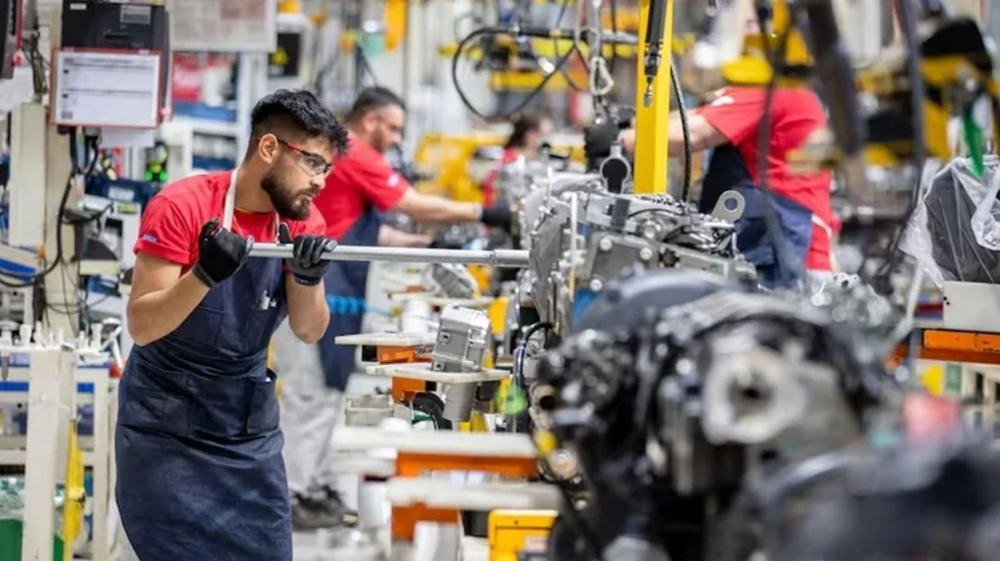

La economía creció un 1,9% en enero: qué sectores lideraron la recuperación y qué significa para 2026
El Instituto Nacional de Estadística y Censos (INDEC) publicó el Estimador Mensual de Actividad Económica (EMAE) correspondiente a enero de 2026, que mostró un crecimiento del 1,9% interanual y del 0,4% respecto a diciembre de 2025. El agro y la minería fueron los motores principales de la suba, en una señal positiva para el arranque del año.

La economía argentina arrancó 2026 con el pie derecho. Según el Estimador Mensual de Actividad Económica (EMAE) —el indicador que publica el INDEC para medir la evolución de la actividad económica mes a mes, antes de que salgan los datos del PBI trimestral— la economía creció un 1,9% en enero de 2026 respecto al mismo mes del año anterior, y un 0,4% en relación a diciembre de 2025. Si bien los números no son espectaculares, confirman que la recuperación que comenzó a esbozarse en la segunda mitad de 2025 se mantiene en curso y que el país no arrancó el año con una caída, algo que no estaba del todo garantizado dado el contexto internacional.
Los protagonistas de esta suba fueron el agro y la minería, dos sectores que vienen ganando peso en la estructura productiva argentina y que responden tanto a condiciones climáticas favorables como a las reformas e inversiones que se vienen consolidando en el país. El campo, con una cosecha que viene desarrollándose sin mayores contratiempos climáticos, aportó volumen exportador y actividad a lo largo de toda la cadena agroindustrial. La minería, por su parte, sigue en expansión gracias al interés inversor que despertó el RIGI y a proyectos que ya están en ejecución en distintas provincias del país. Ambos sectores tienen en común que generan dólares genuinos, lo que también impacta positivamente sobre las reservas del Banco Central.
El dato interanual del 1,9% debe leerse con cierta perspectiva. Enero de 2025 había sido un mes todavía marcado por la turbulencia de los primeros meses del programa económico del Gobierno, con consumo deprimido y actividad general contraída. Por eso, crecer un 1,9% respecto a ese piso no es un resultado extraordinario, pero sí es consistente con la tendencia de recuperación gradual que vienen mostrando los indicadores desde mediados del año pasado. Más relevante aún es el crecimiento del 0,4% respecto a diciembre, que indica que la economía no solo no retrocedió al salir de las fiestas —un período estacionalmente favorable para el consumo— sino que siguió avanzando.
El desafío para los próximos meses será que esa recuperación se amplíe más allá del agro y la minería, y empiece a sentirse con más fuerza en sectores como la industria, la construcción y el comercio, que son los que más empleo generan y los que más impacto tienen en el bolsillo cotidiano de los argentinos. Las señales de inversión que llegaron en las últimas semanas —desde Mercado Libre hasta TGS y Pampa Energía— apuntan en esa dirección, pero sus efectos sobre la actividad general tardarán algunos meses en materializarse. Por ahora, el 1,9% de enero es un dato que el Gobierno puede mostrar con alivio: la economía crece, y eso es el punto de partida para todo lo demás.